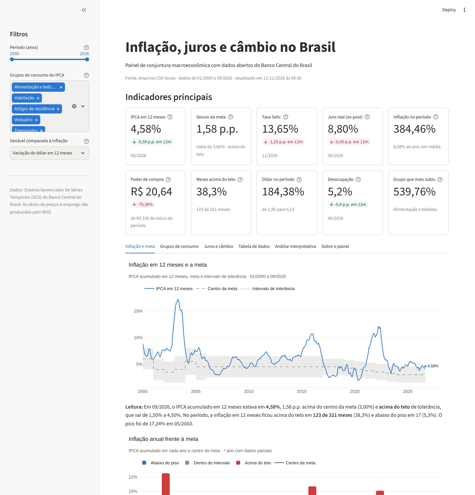

Sistema de análise de dados e dashboard interativo com dados abertos do Banco Central do Brasil
Augusto Lamounier · Ciência de Dados e Inteligência Artificial
Use ↓ / ↑ ou a barra de espaço para navegar.
| 1 | A inflação tem ficado dentro da meta? |
| 2 | Quais grupos de consumo mais encareceram? |
| 3 | Como a Selic reagiu à inflação? O juro real foi positivo? |
| 4 | A alta do dólar anda junto com a inflação? |
| 5 | Quanto poder de compra o real perdeu desde 2000? |
| 6 | Existe padrão sazonal na inflação? |
IPCA e seus nove grupos, Selic, dólar, desocupação, IBC-Br e meta de inflação.
Sem cadastro nem chave: api.bcb.gov.br/dados/serie/bcdata.sgs.{código}/dados
Cuidado principal: valores ausentes estruturais (séries que começam depois de 2000 e meses ainda não divulgados) — mantidos como ausentes, nunca inventados.
| Classe | Responsabilidade |
|---|---|
FonteDados (abstrata) | Origem dos dados: API, CSV ou API com cópia local |
TratadorDados | Tipos, duplicidades, datas futuras, ausentes |
AnalisadorDados | Filtros, agrupamentos, ordenação, estatísticas |
Indicador (abstrata) | Sete subclasses, dez indicadores |
Visualizador (abstrata) | Seis tipos de gráfico Plotly |
Dashboard | Organiza a página Streamlit |
Fluxo: Fonte → Tratador → Analisador → Indicadores e Gráficos → Dashboard
calcular(), executa regras diferentes._privados e @property; dados devolve uma cópia.class Indicador(ABC):
@abstractmethod
def calcular(self, analisador): ...
class IndicadorPoderDeCompra(Indicador):
def calcular(self, analisador):
acumulado = analisador.acumulado("ipca")
return self._resultado(100 / (1 + acumulado / 100))
class PainelIndicadores:
def calcular_todos(self, analisador):
return [i.calcular(analisador)
for i in self._indicadores]| S | O analisador não conhece Plotly nem Streamlit; os gráficos não fazem cálculo. |
| O | Novas fontes, indicadores e gráficos entram como subclasses. |
| L | Qualquer FonteDados serve ao pipeline — inclusive a fonte falsa dos testes. |
| I | ClienteHTTP tem um único método: obter_json. |
| D | Dependências entram pelo construtor; as classes concretas são escolhidas só no app.py. |
Acima do teto em 123 de 321 meses; abaixo do piso em 17. Três episódios: 2002–03, 2015–16 e 2021–22.
Cinco grupos ficaram acima do IPCA geral (384,5%).
Juro real médio de 5,81% ao ano; negativo em apenas 22 meses, em 2020–2021.

Demonstração ao vivo: streamlit run app.py
AppTest executa o dashboard inteiro e mexe nos filtros.